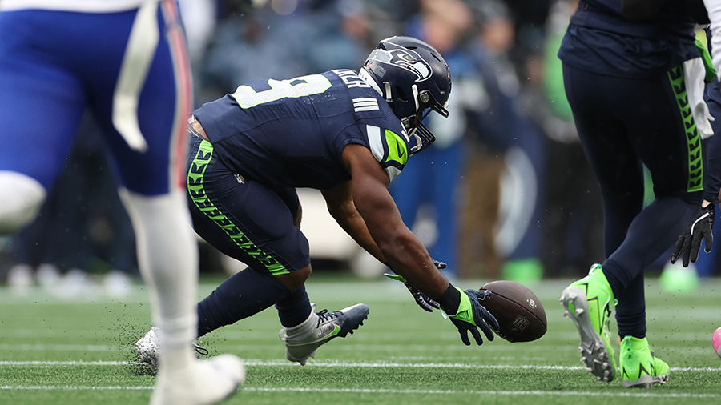
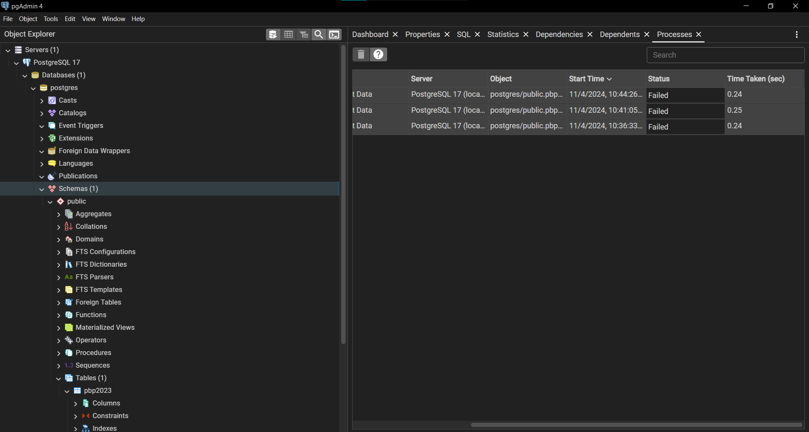
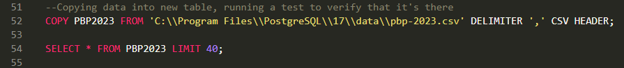
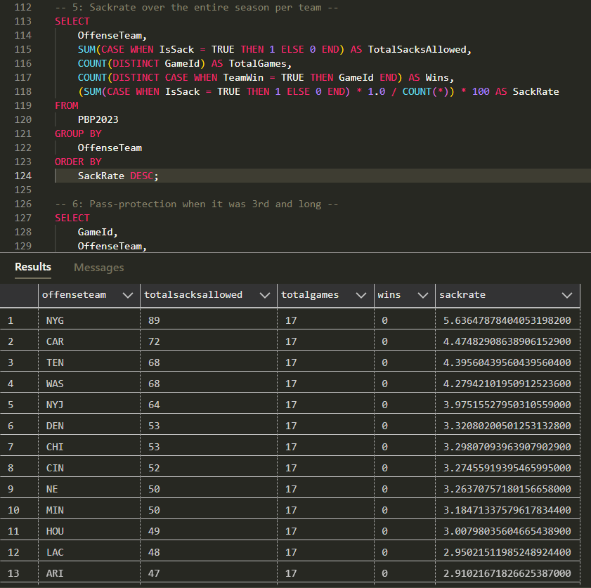
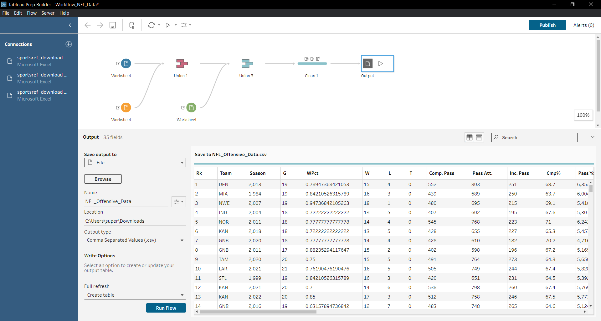

NFL Data Project
January 5th, 2025 by Aaron Jones
Share on:
Chapter 1: Introdcution and Context
October 27th, 2024
This project started thanks to the Seahawks regular season home game against the Bills on October 27th. I'm a massive Seahawks fan, and there's no worse feeling for me than seeing them lose at home. During the game, there were two botched snaps that went horribly wrong, and Seahawks QB Geno Smith was getting pressured all game by Buffalo's defense.

So, I set out to investigate NFL statistics to truly determine if there was a single position or statistic related to the offensive line that leads to a higher success rate. I started by crafting an official hypothesis to guide my analysis:
From 1970 to 2024 (the "Modern" era of football), does offesnive line perfomance, specifically the stat of average sacks per game, correlate to a higher winning percentage for each team over the course of the season?
Chapter 2: Trying SQL
November 4th, 2024I seeked out advice from my INFO 330 professor Bill Howe on the specific methods I could use and what data to analyze. He pointed me toward the NFL PBP (Play-by-Play) dataset on NFLsavant.com, a rich resource containing play-by-play data for every game. Armed with this lead, I decided to dive deeper.
I downloaded the play-by-play data, and decided to try and use SQL to analyze it first, since it was what I was learning at the time.
To do so, I decided to set up a localhost server on my machine using PostgreSQL to host the csv file. This marked my first foray into PostgreSQL, a tool I was eager to try. Here's a look into my pgAdmin ecosystem, including the localhost server including the pbp2023 table (where I would insert data using SQL later):

This simple query below pointed to the csv file saved on my computer, and imported it into the new table I had just created. I verified that it worked by simply running a "SELECT *"" statement.

After days of trial and error, I wrote several queries that anaylze the play-by-play data to assess offensive line perfomance for every game of the 2023 season. Here's an example of one that returns each team's total season "sackrate" in descending order, where a higher "sackrate" correlates to the number of times the team received a sack throughout the season:

While these queries yielded insightful metrics, I hit a roadblock when trying to visualize the data. Raw numbers alone couldn’t provide the holistic view I was seeking about offensive line impact. I needed a way to assess entire teams comprehensively to measure the true value of offensive line play.
With this roadblock and my upcoming final exams and projects, I officially put this project on ice.
Chapter 3: Switching Gears to Tableau
December 15th, 2024After my finals, I went back home to Redmond, WA to start my winter break. I revisited the project, and found myself yet again staring at a brick wall.
I talked with my dad, Ben Jones, who just so happens to be an expert in data and an excellent mentor. He reviewed my project, and mentioned the idea of bringing my data into Tableau for visualization.
So, I re-evaluated my approach. I downloaded a new dataset from Stathead.com which returned the regular season statistics from every team from 1970 to 2024, including a variety of season-long statistics like TDs, Times Sacked, and wincount.
I needed to join this first dataset with another from stathead that included each team's defensive stats (such as sacks gained). This way, I could assess offensive and defensive performance for each team and get a perspecitve on a team's performance beyond just offensive line performance.
December 17th, 2024
Since I wasn't using SQL anymore, I decided to give Tableau Prep Builder a try (which for me was free, since I was a student!). Turns out, Tableau Prep Builder is actually really effective at perfoming unions and joins without messing everything up. This is what my workflow looked like, where I unioned three datasets (offensive, defensive, and another with both of them to add more teams).

Now that I had a full dataset, I could finally import the csv into Tableau and get to work. After trial and error, I created these three visualizations that I was happy with and pushed to Tableau Public. Here's those visualizations:

This first visualization displays each teams season long win percentage (x-axis) by the number of sacks they gained (y-axis). I used a method called "data segmentation" to break the data up into 4 quartiles. The piece of this data that stood out the most to me was the "High Sacks High Wins" relationship, wiht a P-value of < 0.0001, suggesting an existing relationship between getting sacks and winning games. However, the r-value of that relationship is ~0.1, which implies there is some link between the two, although not a highly telling one.

This next visualization is also highly informative. I was intriguied by the "High Sacks High Wins" relationship from my earlier visualization, and decided to create a new visualization that asseses each team's win percentage by their sack differential (times they sacked their opponent - times they were sacked) and the results seemed to correlate with my earlier findings. This one also had a highly signficant p-value of < 0.001. But just like the previous visualization, the r-value remains low at ~0.2.

This final visualization is really when I started piecing things together. In this visualization, I compared each team's win percentage by the number of times they recevied sacks, and I was completely suprised by the outcome. Unlike the previous two, the data is much more sparatic here, with a measly r-value of ~0.01! This shook up my project and lead me to my final analysis.
Chapter 4: Final Takeaways and Next Steps
January 5th, 2024
So, here I am at the end of the road, one day before I start classes again at UW.
I learned a lot with this project! For starters, the NFL is far more nuanced than I had originally thought.
At the beginning of this project, even if I wouldn't have admitted it, I set out to try and prove my hypothesis that offesnive lines are
the most impactful part of an NFL team. But as I got deeper into this project, my viewpoint started to change.
Take the 2021 Cincinatti Bengals in my third visualiztion for example (you can find them at the furthest x point at 74 times sacked).
When I was analyzing the relationship between times sacked and win percentage, this team stood out.
They were the team with the highest count of times sacked, and yet that team went to a Superbowl that year.
On the surface, the existance of this and other outlier teams undermine my hypothesis and should have derailed my project.
But instead, it just changed my perspective.
The 2021 Bengals and other outliers like it suggests that there is more that goes into a NFL team's success than single statistics like sacks.
Success is larger than the season-long perfomance of just a the offensive line and sacks, for example.
My biggest takeaway from this project is that when working with data, it's important to be curious. If really wanted to, I could have just
handpicked play-by-play and regular season statistic data from any team I wanted, and "prove" that their success was due to their
offensive line (or anything else for that matter). But instead, it is far more valuable to take a more curious and widespread approach.
If I were to start this project all over again, I would change my hypothesis to:
From 1970 to 2024 (the "Modern" era of football), does any specific game stat (excluding TDs) correlate to a higher winning percentage for each team over the course of the season?
When I revisit this project, I'll proceed with the next steps:
- Analyze a wider variety of statistics beyond sacks, in an attempt to find the most "impactful" statistic (if it exists!)
- Try different methods of analyzing the data, such as Python
- Ask for input from my peers as to how I could have approached the project differently, and try it!
Thank you so much for reading about my NFL Data project. If you're reading this and want to connect, feel free to connect with me on LinkedIn.
Aaron Jones